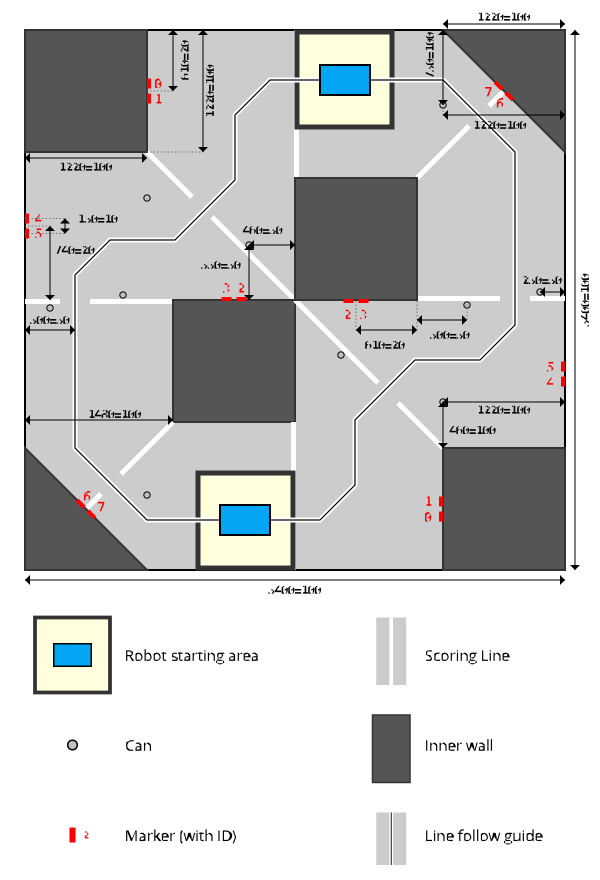

Robot Design Rules
To ensure a fair competition, all teams must adhere to the following regulations.
Violations of these rules, without an exemption, may result in penalties.
These may include deductions of points or outright disqualification.
-
Robots must fit within a 500 mm × 500 mm × 500 mm cube at all times.
-
Robots must have a spare USB slot accessible to match officials.
-
Robots must have a flag mounting that conforms to the flag mount requirements.
-
Robots must not use any remote control systems, radio transmitters or receivers.
-
Robots must not have any fiducial markers visible to other robots that may confuse other robots.
If you have questions or concerns about the rules and regulations, including applying for an exemption, please ask.
Safety Regulations
All robots must be safe. To confirm that your robot is safe, a safety inspection will be carried out by SRO prior to the start of the competition event.
Robots must pass a safety inspection before they can enter a physical arena.
In order to pass safety inspection, robots must:
-
Have a mass of less than 13 kg. Generally, teams should aim for their robot to be below 10 kg.
-
Have all electronics securely mounted with removable fastenings. Cable ties and screws are recommended for this. Please do not affix anything to the boards with glue or double-sided tape. Electronics should be mounted such that they are not easily damaged.
-
Wiring must not be at risk of being snagged by mechanisms or other robots. Wires should be mounted with removable fastening to aid development.
-
Provide adequate protection to the batteries they use, including protection from mechanical damage.
-
The robot may only be powered through the SRO power board.
-
Only batteries provided or authorised by SRO may be used.
-
A robot's battery must be in the provided battery box, which must be securely mounted.
-
Have a power switch, which will completely immobilise the robot. It must be accessible and obvious, without disassembling the robot in any way. It should be on the top of the robot.
-
Not have any sharp edges or points.
Specifications

-
The above figure represents, to scale, a birds eye view of the arena. The arena is a square with side length 5400mm. All units are in millimetres.
-
The floor of the arena is covered with smooth interlocking EVA foam tiles.
-
The perimeter of the arena floor is delimited by the arena wall, which has a minimum height of 250mm.
-
The inner walls of the arena have a height of 170±20mm.
-
Scoring lines are marked using tape with width 50±5mm.
-
Starting areas are 1000±50mm squares and will be marked by tape which is considered part of the starting area.
Markers
The arena is labelled with fiducial markers. Each marker pattern encodes a number. Each marker number is associated with a particular feature within the arena, and also has an associated size.
| Item |
Marker Numbers |
Marker Size (mm) |
| Arena boundary |
0 - 7 |
100 |
-
Sixteen arena wall markers are positioned around the arena as shown in the arena specification. Marker codes are repeated on each side of the arena.
-
Wall markers are placed such that the bottom of the marker is 20±5mm from the arena floor.
Line follow guide
-
The line follow guide is marked with tape on the arena floor.
-
The guide is marked using black tape with width 12±1mm. The black tape is positioned centrally on a piece of white tape with width 50±5mm.
-
Where the line follow guide passes another taped line, the other line will stop clear of the guide by at least 100mm.
Flag Mounts
To allow observers to associate a robot with its zone, within a match, a coloured flag is attached to each robot.
The flag's colour matches the zone colour and will be provided by SRO. As such:
-
The provided flag mount must be securely affixed to the main chassis of the robot, and hold the flag vertical.
-
Flags are not counted when considering the size of the robot.